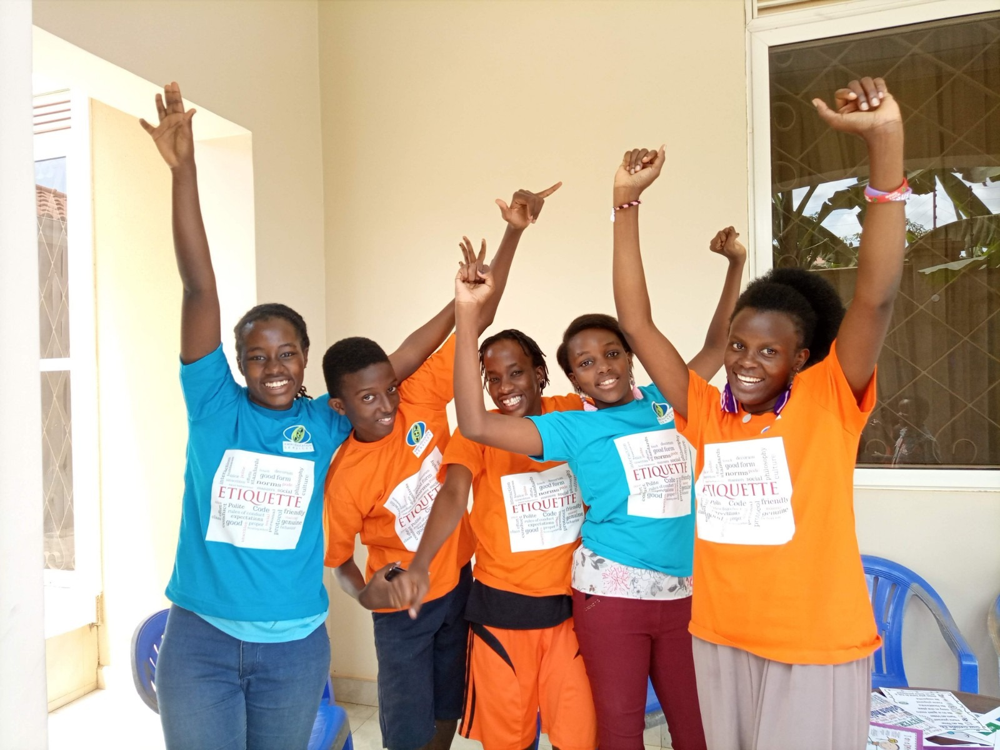
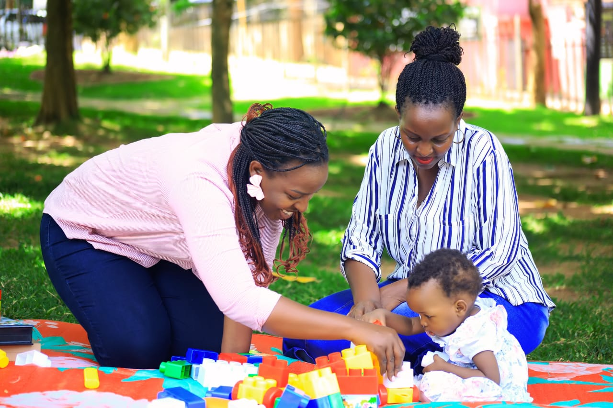
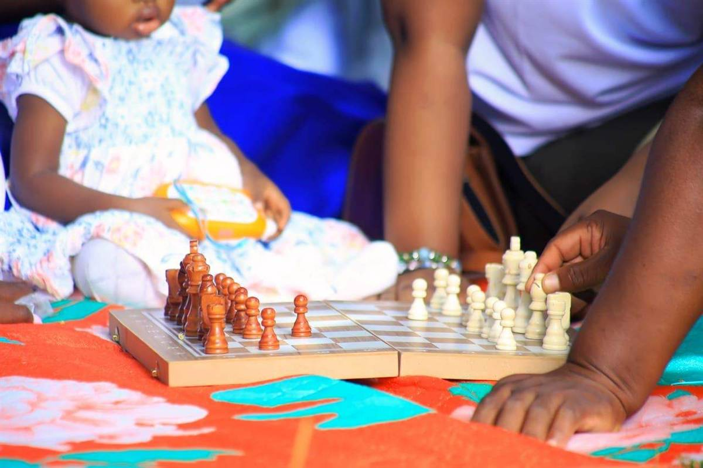

Life at Kwiki
Community in Action
A glimpse into the lives we touch and the communities we serve.


Through tailored interventions for parents, children, and adolescents, Kwiki Education Services contributes to reducing socio-emotional and economic vulnerabilities while strengthening family well-being, enhancing life skills, for increased sustainable economic development.
What We Do
We deliver tailored educational and sustainable development programs for parents, institutions, youth, adults, and children — within their own communities and premises.
Skills training for children, teens, and families, plus local funding initiatives that ease economic stress and open pathways to stability.
Services centred on children, teens, and families, engaging teachers, church leaders, and community leaders as partners in caregiving and well-being.
Counselling, social-emotional care, and community engagement activities that nurture mental health, strengthen family bonds, and promote collective healing.



Our Impact
Every number represents a family that found hope, a child that found support, and a community made stronger.
Families Reached
Children Supported
Years of Service
Dedicated Volunteers
Our Programs
From mental health workshops to vocational skills, our programs address the full spectrum of family needs.
Mentorship, supervision training, and workshops for families, guardians, teachers, and community leaders — promoting mental health and well-being for children and young people.
Equipping gifted but underprivileged youth with practical skills through collective action involving sponsors and vocational schools.
Workshops helping low-income families build sustainable livelihoods through financial literacy and business management skills.
Participants produce bags and baskets for major events, attracting donations that raise incomes and support school-going children.
Participants save UGX 1,000–5,000 daily, growing yearly savings to expand projects, budget better, and support their families.
Training in emotional stability, customer relationships, and community ties — recognising that success grows from strong networks.
Life at Kwiki
A glimpse into the lives we touch and the communities we serve.
Voices of Change
Real stories from parents and participants whose lives have been transformed through our programs.

"The technical and professional skills training at Kwiki opened my eyes to what our communities are truly capable of. When families are equipped with the right tools and knowledge, they don't just survive — they build, they lead, and they inspire the next generation."
FAQ
What is the main focus of Kwiki Education Services?
Holistic education and family sustainable development, with a particular emphasis on supporting vulnerable families facing socio-economic hardship across Uganda.
How does Kwiki address mental health?
Through mentorship, supervision training, and workshops for families, guardians, teachers, and community leaders — all designed to promote the mental health and well-being of children and young people.
Is Kwiki Education Services a school?
No. Kwiki delivers tailored educational programs for parents, institutions, youth, adults, and children within their own communities and premises.
What programs are offered for financially struggling families?
sustainable development programs focused on financial literacy and business management skills, designed to help low-income families build sustainable livelihoods.
How can someone support Kwiki?
By donating, volunteering, or partnering. Every contribution makes a difference — Be Hope for Someone's Tomorrow.
Make a Difference
Your support funds mental health workshops, skills training, and financial sustainable development programs that change families' lives across Uganda.